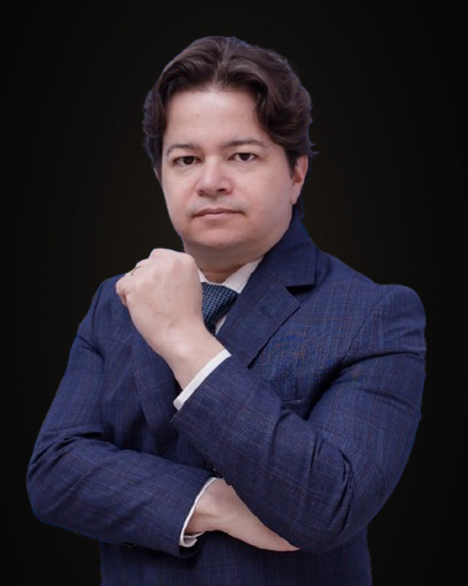

Dr. Rogério Lourenço
OAB/SP 530.267 — OAB/GO 23.267Sócio-fundador do Lourenço & Lourenço, Dr. Rogério construiu a banca em torno de uma única promessa: resolver problemas complexos com método e presença. Em mais de duas décadas de atuação, sua trajetória é marcada pela capacidade de organizar cenários jurídicos, societários e operacionais que se apresentam embaralhados ao cliente — e devolvê-los como plano de ação executável, com etapas, prazos e indicadores de resultado.
A trajetória nasceu em Goiás, onde formou a base contenciosa do escritório atendendo o agronegócio, a indústria e famílias empresárias da região, e ganhou escala com a abertura da unidade em Alphaville/SP, eixo a partir do qual o escritório passou a operar nacionalmente, com presença em todas as instâncias do Poder Judiciário.
Reconhecido pela oratória precisa em sustentação oral e em audiências de instrução, conduz a defesa de teses em primeira e segunda instâncias, bem como em tribunais superiores (STJ e STF), com a clareza necessária para traduzir matérias técnicas em argumento decisivo perante a Corte. É autor de petições e razões recursais em casos paradigmáticos, com construção de teses jurídicas inéditas em matéria empresarial e recuperacional.
Detém notória especialização em causas de alta complexidade — daquelas que cruzam várias especialidades simultaneamente: empresarial, recuperação judicial, tributário, cível e criminal econômico. É justamente nesses casos multiespecialidade que o escritório encontra seu papel: orquestrar a defesa global do cliente sob uma única coordenação técnica, com leitura integrada do problema e divisão clara de responsabilidades entre as frentes.
Atua, ainda, na frente consultiva preventiva, antecipando contingências em operações societárias, reestruturações, planejamentos sucessórios de holdings familiares e disputas que ainda não chegaram ao Judiciário. A premissa é simples: o melhor litígio é o que não precisa existir — e quando precisa, vai à mesa com diagnóstico fechado.
Como líder da banca, conduz pessoalmente os casos estratégicos e é responsável pela formação técnica da equipe, pelo padrão de qualidade das peças e pela cultura de prestação de contas ao cliente que se tornou marca registrada do escritório.